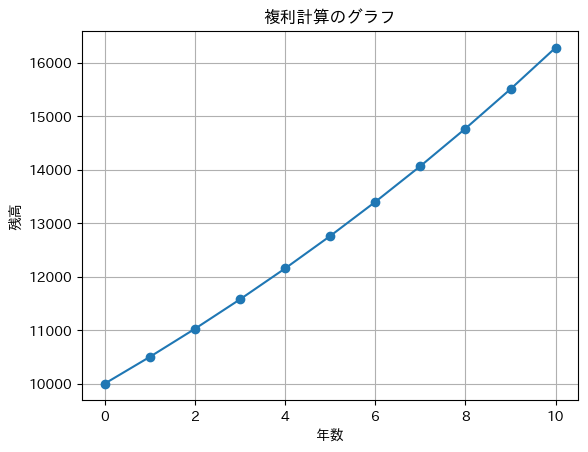
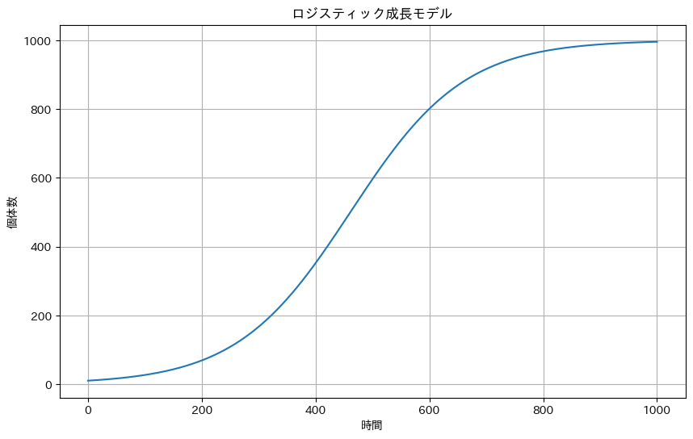

(1) モデル化とシミュレーション
モデルとは、事物や現象の本質的な形状や法則性を抽象化して、より単純化したものを指す言葉であり、事物や現象のモデルを作ることをモデル化という。妥当性の高いモデル化ができれば、実際に行うことが困難な実験を計算だけで行ったり、複雑な現象を再現したりするための手段としても活用できる。モデルを使って実際にどのような現象が起こるのかを予測することを一般にシミュレーションという。
モデルは、表現形式や対象の特徴によって分類することができる。静的モデルは模型や建築図面のように時間的要素を含まないもので、動的モデルはレジの待ち行列や、気象予測、生物の成長など時間的要素を含んだ事象のモデルである。また、確定モデルは不規則な現象を含まず方程式などで表せるモデルであり、確率モデルはサイコロやくじ引きのような不規則な現象を含んだモデルである。
(2) 複利法のシミュレーション
複利法の数式モデル
確定モデルのひとつに複利法による預金金額の時間変化があります。
複利法は元金に利息を加算して、それを次の期間の元金として利息を計算していく方法です。
\[
(利息) = (前年の金額) \times (利率)
\]
\[
(今年の金額) = (前年の金額) + (利息)
\]
この数式モデルについて、Pythonでプログラムを書くと次のようになります。
プログラム中のリスト.append(値)は、リストの末尾に値を追加します。また、\(バックスラッシュ)は、⌥オプション＋¥(円マーク)で入力できます。
import matplotlib.pyplot as plt # matplotlib: グラフを表示するためのライブラリ
import japanize_matplotlib # japanize_matplotlib: matplotlibを日本語化するためのライブラリ
amount = 10000 # 初期預金額
rate = 0.05 # 利率
years = 10 # 期間
# 初期値（0年目）
x = [0] # リスト型変数xの0番目の要素に0
y = [amount] # リスト型変数yの0番目の要素に変数amount
# 年ごとの残高を計算
for i in range(years):
interest = int(amount * rate) # 利息 = 前年の金額 * 利率
amount = amount + interest # 今年の金額 = 前年の金額 + 利息
x.append(i + 1)
y.append(amount)
print(i + 1, "年目: \t", amount, "円") # 「\(バックスラッシュ)」は、「Option + ¥」で入力
# グラフを描画
plt.plot(x, y, marker="o")
plt.title("複利計算のグラフ")
plt.xlabel("年数")
plt.ylabel("残高")
plt.grid(True)
plt.show()
1 年目: 10500 円
2 年目: 11025 円
3 年目: 11576 円
4 年目: 12154 円
5 年目: 12761 円
6 年目: 13399 円
7 年目: 14068 円
8 年目: 14771 円
9 年目: 15509 円
10 年目: 16284 円

(3) 人口予測モデル
人口予測モデル
人口24万人・１年間あたりの人口増加率1%のA市と、人口16万人・1年あたりの人口増加率5%のB市の人口を20年間シミュレーションするプログラムを作成し、何年後にB市の人口がA市の人口を上回るか求めなさい。ただし、人口増加率は変化しないものとする。
import matplotlib.pyplot as plt # matplotlib: グラフを表示するためのライブラリ
import japanize_matplotlib # japanize_matplotlib: matplotlibを日本語化するためのライブラリ
n = 20 # 20年間のシミュレーション
x = [0]
y1 = [24] # リスト型変数y1: 年ごとのA市の人口のリスト（初期値24万人）
y2 = [16] # リスト型変数y2: 年ごとのB市の人口のリスト（初期値16万人）
rate1 = 0.01 # A市の人口増加率 1%
rate2 = 0.05 # B市の人口増加率 5%
for i in range(n):
x.append(i + 1)
y1.append(y1[len(y1) - 1] * (1 + rate1)) # A市の人口をy1に追加： y1[len(y1) - 1]は前年のA市の人口。
y2.append(y2[len(y2) - 1] * (1 + rate2)) # B市の人口をy2に追加： y2[len(y1) - 1]は前年のB市の人口。
# グラフを描画
plt.plot(x, y1, marker="o", label="A市")
plt.plot(x, y2, marker="o", label="B市")
plt.title("人口予測")
plt.xlabel("年数")
plt.ylabel("人口[万人]")
plt.grid(True)
plt.legend()
plt.show()
(4) ロジスティック成長モデル
ロジスティック成長モデル
ロジスティック成長モデルは、ある単一種の生物が一定環境内で増殖するようなときに、その生物の個体数の変動を予測するモデルです（人間の場合にも当てはまります）。何の制約もなければ、個体数はで指数関数的に増加します（前項のとおり）。しかし、実際には環境や資源には限りがあるため、個体数の増加にはいずれはブレーキがかかります。つまり、個体数が増えるにつれて個体数の増加量は小さくなり、どこかの時点で飽和すると考えられます。その環境で生存しうる個体数の上限を環境収容力\(K\)と定めます。
これらを考慮すると、単位時間あたりの個体の増加量と減少量は次のように定義することができます。
\[個体の増加量 = 現在の個体数N \times 増加率r\]
\[個体の減少量 = (\frac{現在の個体数N}{環境収容力K} \times 増加率r) \times 現在の個体数N\]
ここで、減少量の式中の\((\frac{現在の個体数N}{環境収容力K} \times 増加率r)\)は、\(N\)が\(K\)に近づくほど、減少量が大きくなることを意味しています。これに増加率をかけて、減少する割合を求めていいます。さらにこれに現在の個体数\(N\)をかけて、減少量を求めます。
import numpy as np # numpyライブラリのインポート
import matplotlib.pyplot as plt # matplotlibのpyplotモジュールのインポート
# パラメータ
r = 0.01 # 増加率（1単位時間あたりの個体数の増加割合）
K = 1000 # 環境収容力（環境が支えられる最大個体数）
T = 1000 # シミュレーションの総時間（総ステップ数）
N = 10 # 初期個体数
# 時間と個体数の記録用のリスト
times = [0] # 時間の記録用リスト（初期値0）
populations = [N] # 個体数の記録用リスト（初期値N）
# シミュレーションの実行
for i in range(T): # T回シミュレーションを実行
increase = N * r # 個体数の増加分を計算
decrease = (N / K * r) * N # 個体数の減少分を計算
N = N + increase - decrease # 個体数を更新（増加分 - 減少分）
times.append(i + 1) # 時間のリストに新しい時間を追加
populations.append(N) # 個体数のリストに新しい個体数を追加
# 結果のプロット
plt.figure(figsize=(10, 6)) # プロットのフィギュアのサイズを設定
plt.plot(times, populations) # 時間に対する個体数をプロット
plt.xlabel("時間") # x軸のラベルを設定
plt.ylabel("個体数") # y軸のラベルを設定
plt.title("ロジスティック成長モデル") # プロットのタイトルを設定
plt.grid(True) # グリッドを表示
plt.show() # プロットを表示

(5) 疾病感染者数のシミュレーション
SIRモデル
SIRモデルは感染症の流行をシミュレーションする単純な数理モデルです。原型となったのは、W・O・カーマックとA・G・マッケンドリックによる1927年に報告された論文で、単純なSIRモデルであっても1905年のボンベイにおけるペスト流行のデータをうまく再現できることで知られています。
・\(S\) (Susceptible) 感受性保持者： 感染症に対して免疫を持たない健康な個体。
・\(I\) (Infected) 感染者： 感染症を持ち、ほかの感受性保持者の個体に感染を広げる可能性のある個体。
・\(R\) (Recovered) 免疫保持者（回復者または隔離者）： 感染後に免疫を持つようになった個体、または感染症で亡くなった個体。
\(S\)，\(I\)，\(R\)の時間変化量\(\varDelta S\)，\(\varDelta I\)，\(\varDelta R\)は
\[
\varDelta S = -\beta S I \times \varDelta t
\]
\[
\varDelta I = (\beta S I - \gamma I) \times \varDelta t
\]
\[
\varDelta R = \gamma I \times \varDelta t
\]
と表せます。
ここで、\(\beta\)は感染率を示す定数で、１人の感染者が単位時間あたりに平均して感染させる\(S\)の個体数を表し、感染者と接触した感受性保持者が感染する確率です。たとえば、\(\beta=0.2\)の場合、感受性保持者が単位時間あたり20%の確率で感染することを意味します。
また、\(\gamma\)は回復率を示す定数で、感染者が1日あたりに回復する確率を表し、感染者がどれだけ早く回復するかを表します。たとえば、単位時間を1日とすると、\(\gamma=0.1\)なら感染者は平均して10日で感染症から回復し、\(\gamma=0.2\)なら感染者は平均して5日で感染症から回復することを意味します。この値は病気の種類やほかの要因によって異なります。
import numpy as np
import matplotlib.pyplot as plt
import japanize_matplotlib
# シミュレーションパラメータ
beta = 0.3 # 伝染率
gamma = 0.1 # 回復率
T = 100 # シミュレーション期間
dt = 0.1 # 時間間隔
# 初期条件
S = 0.99 # 未感染者の割合
I = 0.01 # 感染者の割合
R = 0.0 # 回復者の割合
# 結果を保存するリスト。初期値を代入しておく。
S_list = [S]
I_list = [I]
R_list = [R]
t_list = [0]
# シミュレーションの実行
steps = int(T / dt)
for i in range(steps):
dS = -beta * S * I * dt
dI = (beta * S * I - gamma * I) * dt
dR = gamma * I * dt
S = S + dS
I = I + dI
R = R + dR
S_list.append(S)
I_list.append(I)
R_list.append(R)
t_list.append((i + 1) * dt)
# 結果のプロット
plt.figure(figsize=(8, 5))
plt.xlim(0,100)
plt.ylim(0,1)
plt.plot(t_list, S_list, label="$S$ (Susceptible) 感受性保持者")
plt.plot(t_list, I_list, label="$I$ (Infected) 感染者")
plt.plot(t_list, R_list, label="$R$ (Recovered) 免疫保持者")
plt.xlabel("時間[日]")
plt.ylabel("割合")
plt.legend()
plt.title("SIRモデル（疾病感染者数のシミュレーション）")
plt.show()
-
感染の拡大
- 初期段階では\(S\) が多く、\(I\) が少ない状態からスタートします。しかし、\(I\) の数が増加すると、\(S\) から\(I\) への以降が増え、感染が拡大します。
-
感染のピーク
- ある点で\(I\) が最大に達し、その後は減少し始めます。これは、多くの人々が感染から回復し始め、また新たに感染する\(S\) の割合が減少するためです。
-
安定状態
- 最終的には、感染が安定し、新たな感染者は出現しなくなります。
SIRモデルは、感染症の流行の初期段階の予測、ワクチン接種の効果の評価、隔離や封じ込め策の効果のシミュレーションなど、公衆衛生の多くの場面において有用です。しかし、実際の疾病の伝播はさらに複雑であり、より高度なモデルが必要となります。